Le réseau social des parieurs sportifs. Scanne tes tickets en une photo, suis ta bankroll, et chambre tes potes quand leur combiné casse.
Télécharger dansl'App StoreGratuit, abonnement SociaBet+ optionnel · iPhone · 18 ans et plus
TROIS GESTES, ET TON PARI VIT SA VIE.
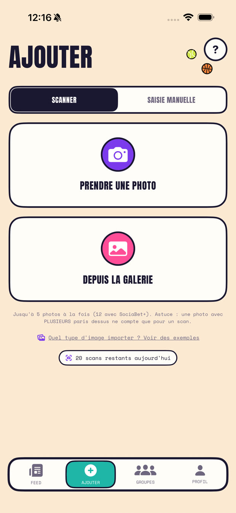
Une photo ou un screenshot : sélections, cotes, mise et gain sont lus tout seuls. Plusieurs paris sur une image ? Tous importés. Pas de ticket ? Saisie manuelle en 30 secondes.
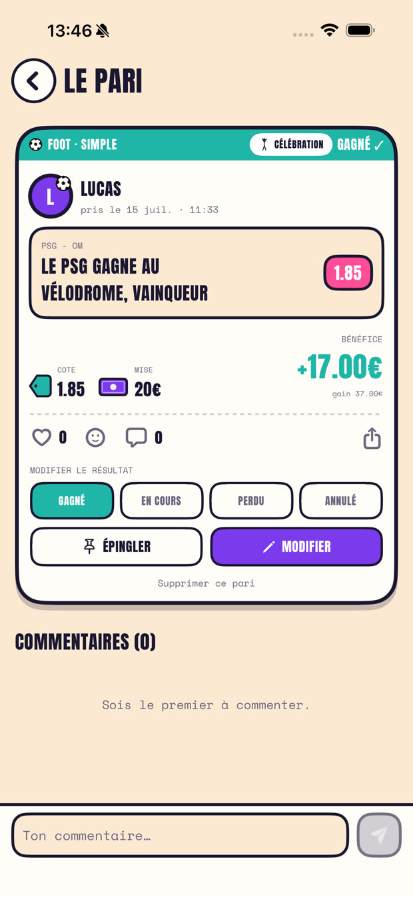
Public, entre amis, en groupe ou privé : tu choisis qui voit quoi, pari par pari. Tes potes likent, commentent, réagissent, et reprennent ton prono en un tap.
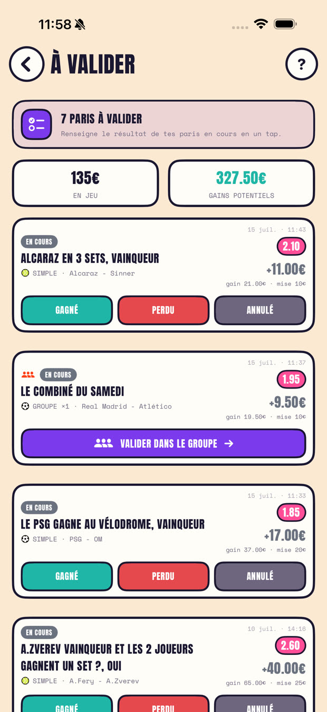
Gagné, perdu, annulé : un tap et c'est réglé. Mise en jeu et gains potentiels sous les yeux, bankroll à jour en direct.
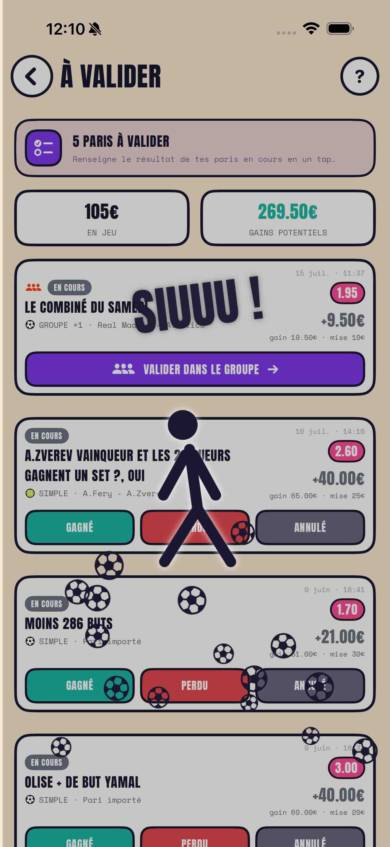
Un pari gagné, et c'est le show : le SIUUU, la samba, le salto, la statue dorée, le but en or… 28 célébrations à débloquer, dont des exclusives. Tes potes peuvent la rejouer depuis ton pari, et tu peux l'envoyer dans le chat de groupe pour enfoncer le clou.
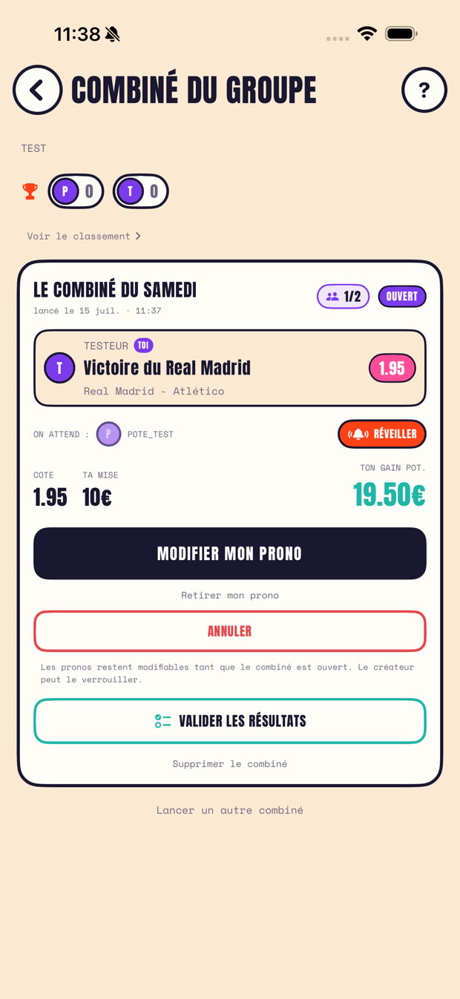
Chaque membre ajoute UN prono avec SA mise (un match différent chacun), et les cotes se multiplient : le combiné se joue ensuite chez votre bookmaker. Un retardataire ? Un bouton pour le réveiller. Ça passe : gloire collective. Un seul prono tombe : le coupable devient LE FOOTIX, pseudo rouge et avatar marqué partout, jusqu'à ce qu'un autre fasse pire. Chat, classement et tableau des coupables inclus.
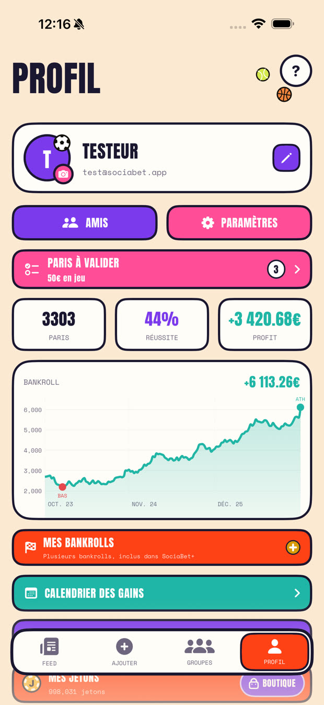
Ton vrai bilan, sans triche : paris, réussite, profit net, et la courbe de ta bankroll à explorer jour par jour. Gère plusieurs bankrolls, repars à neuf sans perdre ton historique, et plonge dans les stats détaillées : répartitions, records, séries, meilleurs créneaux.
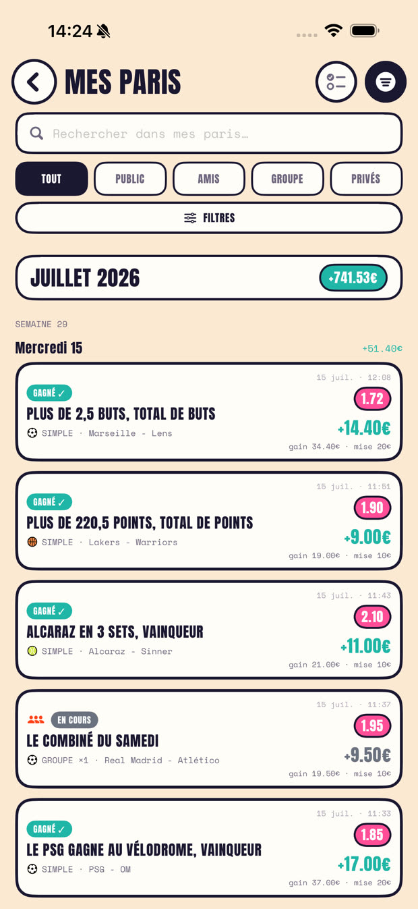
Toute ta carrière de parieur au même endroit : recherche libre, onglets public / amis / groupes / privés, filtres par statut, sport ou bookmaker, et tri par plus grosse cote ou plus gros gain. Les en-têtes de mois affichent ton bilan exact, même sur des milliers de paris.
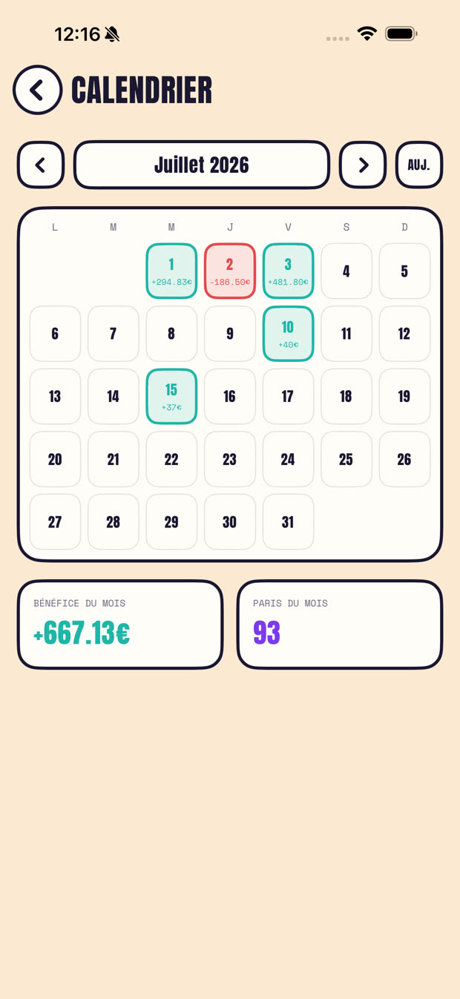
Tes journées vertes et tes journées rouges, mois par mois, comme un vrai bilan de trader. Remonte les mois passés en un tap. Un mois rouge se lit aussi vite qu'un mois vert : c'est comme ça qu'on progresse.
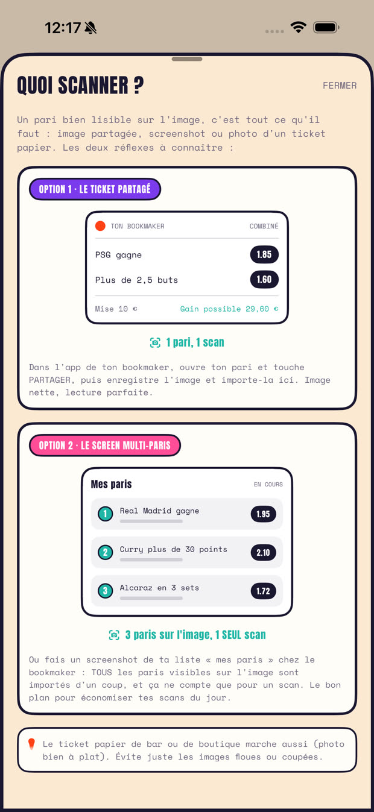
Le ticket partagé depuis l'app de ton bookmaker, un screenshot de ta liste de paris (tous importés pour un seul scan), ou la photo d'un ticket papier de bar. L'app t'explique même quoi capturer, avec des exemples. Tout est pré-rempli, tu n'as plus qu'à vérifier.
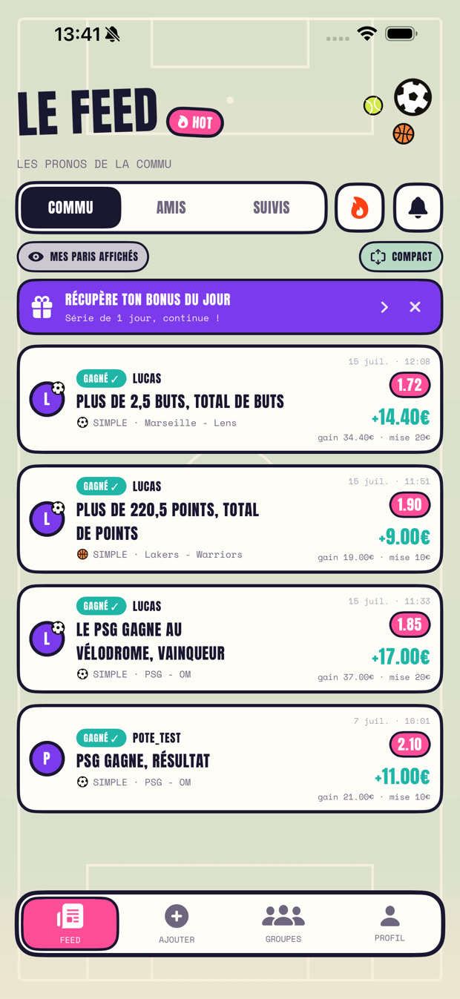
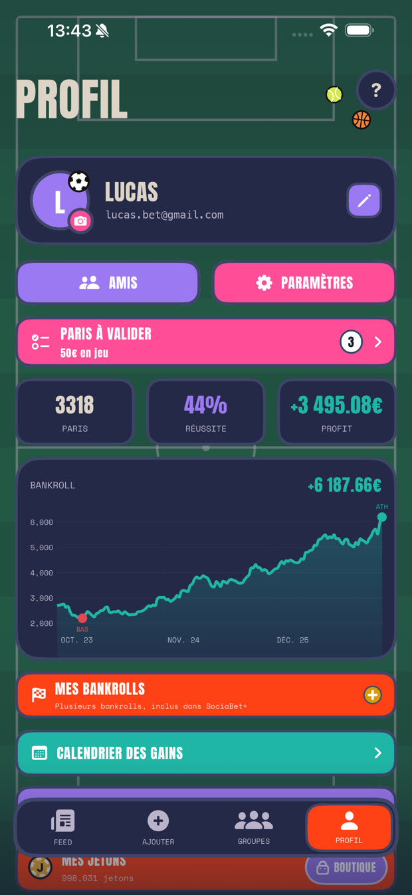
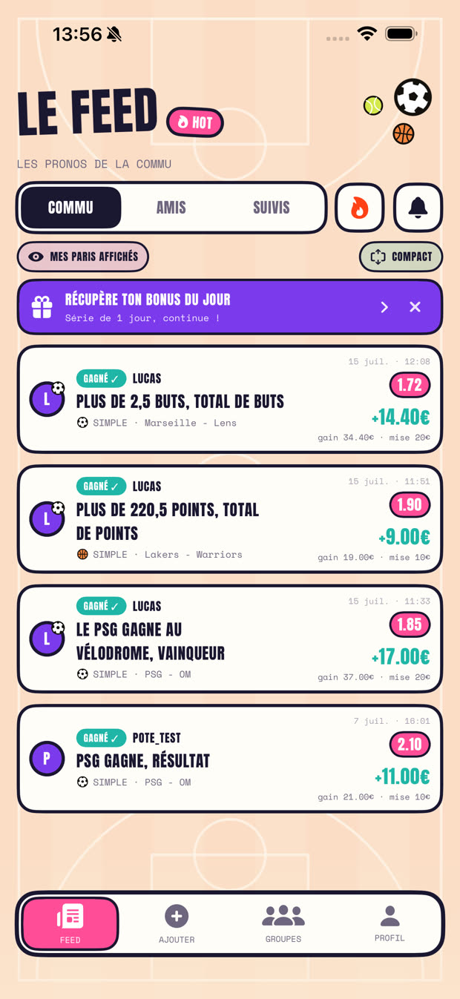
Terrain de foot, parquet, patinoire, circuit F1, tapis de casino… et les thèmes sombres qui basculent toute l'app en mode nuit : stade sous les projecteurs, ciel étoilé, court en nocturne. Ils s'achètent en jetons et s'appliquent partout : feed, profil, groupes.
Bonus quotidien, séries de connexion, défis vérifiés serveur. Une monnaie de jeu, sans valeur monétaire, qui se gagne en jouant.
Cadres d'avatar animés, titres, thèmes, fonds d'app (stade la nuit, casino, parquet…), compagnons et célébrations.
Chambre ou félicite en un tap. Les abonnés ont 4 réactions animées exclusives : GOAT, LÉGENDE, TACLE, DIAMANT.
Cotes boostées et bons plans partagés par tes amis et tes suivis, avec notification. Fini le bon plan raté.
200 jetons par pote qui rejoint avec ton code, et une célébration d'équipe exclusive à 5 parrainages.
100 scans par jour, labo de stats complet, montantes illimitées, bankrolls multiples et cosmétiques exclusifs.
SociaBet est gratuit. Crée ton groupe, lance un combiné, et que le meilleur chambre les autres.
Télécharger dansl'App StoreUne question, un bug, une idée ? Écris-nous à contact@sociabet.com, on répond en général sous 48 heures. Les questions fréquentes (abonnement, compte, scan) sont sur la page d'aide.
SociaBet ne prend aucun pari en argent réel et n'est pas un opérateur de jeux d'argent. Les paris sportifs comportent des risques : endettement, isolement, dépendance. Pour être aidé, appelle le 09 74 75 13 13 (appel non surtaxé) ou rends-toi sur joueurs-info-service.fr.